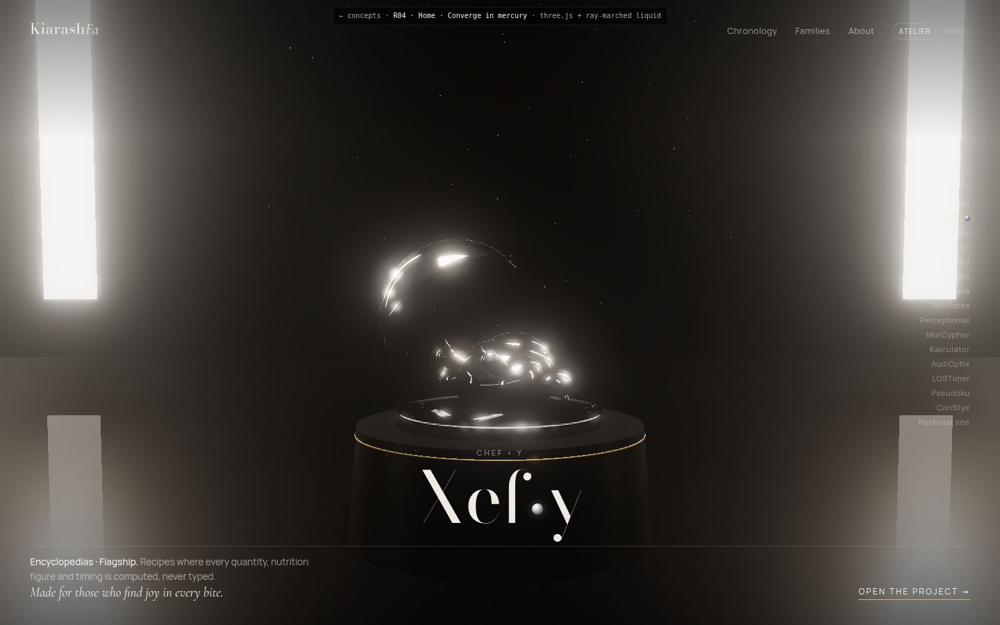

01
Home
Two words, one drop, one emblem in pure mercury.
three.js + ray-marched liquidAtelier or void, chosen by your machineloading screen
- Words
- Now with your fusions: Xefy is chef + y, eXir is elixir with its X, DrXRates is Director + X.
- Emblems
- The liquid pours into the shape, then sets into a crisp mercury sculpture. No colour on the home page.
- Quality
- The page guesses from your graphics card, times a few real frames behind the loading screen, and steps down if it stutters. Phones get a lighter Atelier.
Open →scroll; try the Atelier / Void switch